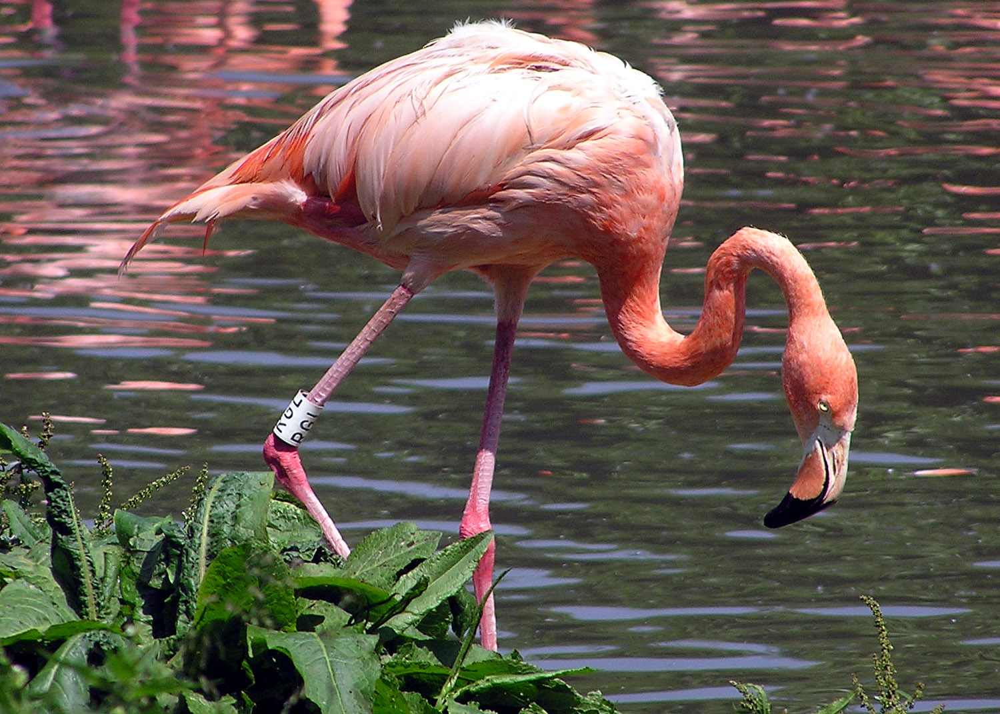

El Flamenco es un ave acuática conocida por su color rosa y patas largas.

• Plumaje rosado. • Patas y cuello muy largos. • Pico curvado hacia abajo. • Vive en lagunas y zonas húmedas. • Se alimenta de algas y pequeños crustaceos
El color rosa del flamenco se debe a los pigmentos de los alimentos que consume